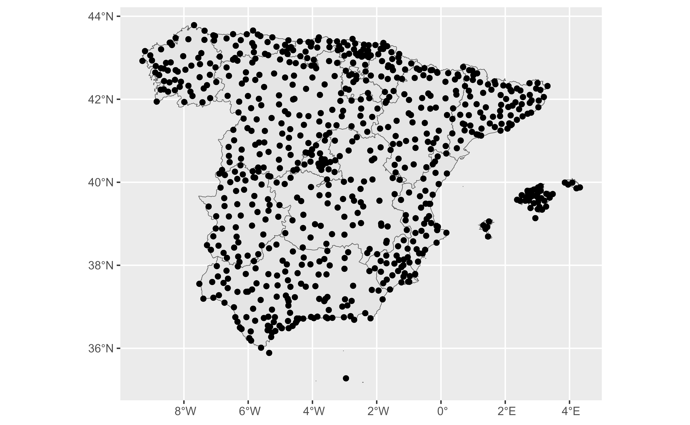
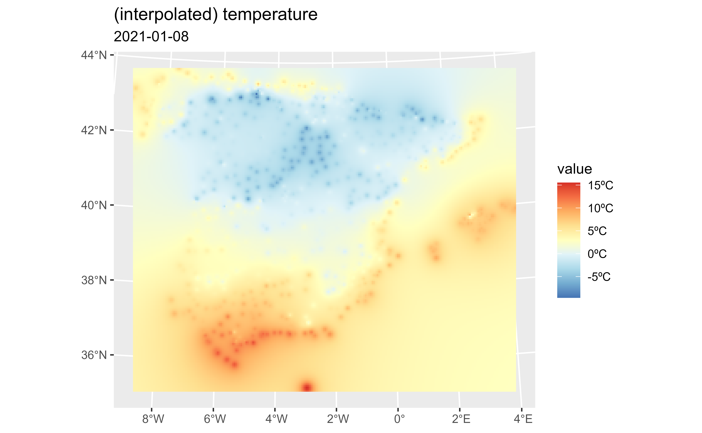
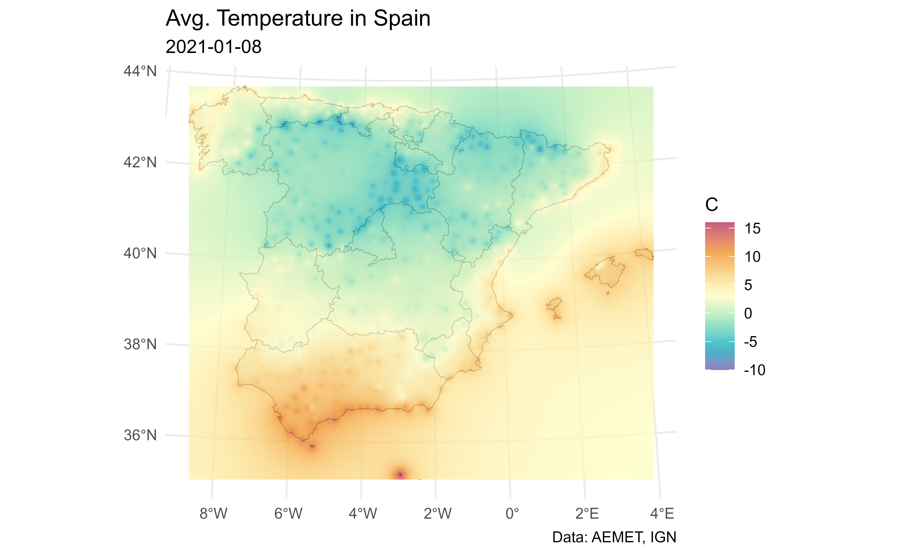

Spatial Interpolation with climaemet
Diego
Hernangómez

Manuel
Pizarro
Source: vignettes/articles/interpolation.Rmd
interpolation.Rmdclimaemet can retrieve data from the stations included on AEMET Open Data. However, in terms of spatial analysis and visualization, it can be useful to extend the data from points (stations) to the whole extent of Spain. On this article we would explain a method to interpolate the climatic data trough Spatial Interpolation, that is the process of using points with known values to estimate values at other unknown points.
Initial config
For this analysis, we would need the following libraries:
library(climaemet)
library(mapSpain) # Base maps of Spain
library(sf) # spatial shape handling
library(terra) # Spatial raster handling
library(gstat) # for spatial interpolation
library(dplyr) # data handling
library(ggplot2) # for plots
library(tidyterra) # Plotting SpatRasters with tidyterra
library(gifski) # we would create an animationRetrieving data
We choose here the daily climatic data from Winter 2020-2021 in Spain. Note that on the first half of January, Storm Filomena brought unusual heavy snowfall to parts of Spain, with Madrid recording its heaviest snowfall since 1971. We should be able to spot that.
clim_data <- aemet_daily_clim(
start = "2020-12-21",
end = "2021-03-20",
return_sf = TRUE
)
clim_data_clean <- clim_data %>%
# Exclude Canary Islands from analysis
filter(!provincia %in% c("LAS PALMAS", "STA. CRUZ DE TENERIFE")) %>%
dplyr::select(fecha, tmed) %>%
# Exclude NAs
filter(!is.na(tmed))
summary(clim_data_clean$tmed)
#> Min. 1st Qu. Median Mean 3rd Qu. Max.
#> -15.200 6.100 9.500 8.876 12.200 23.000
ggplot(clim_data_clean) +
geom_sf()We load also a basic shape file of Spain using mapSpain:
ccaa_esp <- esp_get_ccaa(epsg = 4326) %>%
# Exclude Canary Islands from analysis
filter(ine.ccaa.name != "Canarias")
ggplot(ccaa_esp) +
geom_sf() +
geom_sf(data = clim_data_clean)
As it can be seed, the climatic data we have available so far is restricted to the stations (points), but we want to extend these values to the whole territory.
Filling the gaps: Interpolation
As we need to predict values at locations where no measurements have been made, we would need to interpolate the data. On this example we would use the terra package and we would apply the Inverse Distance Weighted method, that is one of several approaches to perform spatial interpolation. We recommend consulting Hijmans and Ghosh (2023) on how to perform these analysis on R.
The process would be as follow:
- Create an spatial object (SpatRaster) where the predicted values would be applied.
- Perform an spatial interpolation.
- Visualize the results.
Creating a grid
For this analysis, we need a destination object with the locations to be predicted. A common technique is to create a spatial grid (a “raster”) covering the targeted locations.
On this example, we would use terra to create a regular grid that we would use for interpolation.
An important thing to consider in any spatial analysis or visualization is the coordinate reference system (CRS). We won’t cover this in detail on this article, but we should mention a few key considerations:
- When using several spatial objects, we should ensure that all of them present the same CRS. This can be achieved projecting the objects (i.e. transforming their coordinates) to the same CRS.
- Longitude/latitude coordinates are unprojected coordinates. When we project an object (i.e. Mercator projection) we actually change the values of every point (x,y) coordinates (i.e. a projection is a transformation of the coordinates.)
- For measuring distance in meters, etc. we should choose the right projection. Distances on unprojected coordinates are meaningless. Think that 1 degree of longitude on the equator means 111 kms but on the North Pole means roughly 0.11 m. The degrees just split a circumference on equally spaced buckets, but the Earth is an spheroid and the circumferences at different latitudes doesn’t have the same length (opposed to a cylinder, where circumferences are the same at any latitude or y-axis.)
On this exercise, we choose to project our objects to ETRS89 / UTM zone 30N EPSG:25830, that provides x and y values on meters and maximizes the accuracy for Spain.
clim_data_utm <- st_transform(clim_data_clean, 25830)
ccaa_utm <- st_transform(ccaa_esp, 25830)
# Note the original projection
st_crs(ccaa_esp)$proj4string
#> [1] "+proj=longlat +datum=WGS84 +no_defs"
# vs the utm projection
st_crs(ccaa_utm)$proj4string
#> [1] "+proj=utm +zone=30 +ellps=GRS80 +towgs84=0,0,0,0,0,0,0 +units=m +no_defs"Now, we create a regular grid using terra. This grid is composed to equally spaced points over the whole extent (bounding box) of Spain.
We use here a density of 5,000 (m), so the grid density is 5 x 5 kms (25 km2):
Interpolating the data
Now we just need to populate the (empty) grid with the predicted values based on the observations:
# Test with a single day
test_day <- clim_data_utm %>% filter(fecha == "2021-01-08")
# Interpolate temp
init_p <- test_day %>%
vect() %>%
as_tibble(geom = "XY")
gs <- gstat(
formula = tmed ~ 1, locations = ~ x + y, data = init_p,
set = list(idp = 2)
)
interp_temp <- interpolate(grd, gs)
#> [inverse distance weighted interpolation]
#> [inverse distance weighted interpolation]
# Plot with tidyterra
ggplot() +
geom_spatraster(data = interp_temp %>% select(var1.pred)) +
scale_fill_whitebox_c(
palette = "bl_yl_rd",
labels = scales::label_number(suffix = "ºC")
) +
labs(
title = "(interpolated) temperature",
subtitle = "2021-01-08"
)
Let’s create a nice ggplot2 plot! See also Royé (2020) for more on this.
# Making a nice plot on ggplot2
temp_values <- interp_temp %>%
pull(var1.pred) %>%
range(na.rm = TRUE)
# Get min and max from interpolated values
min_temp <- floor(min(temp_values))
max_temp <- ceiling(max(temp_values))
ggplot() +
geom_sf(data = ccaa_utm, fill = "grey95") +
geom_spatraster(data = interp_temp %>% select(var1.pred)) +
scale_fill_gradientn(
colours = hcl.colors(11, "Spectral", rev = TRUE, alpha = 0.7),
limits = c(min_temp, max_temp)
) +
theme_minimal() +
labs(
title = "Avg. Temperature in Spain",
subtitle = "2021-01-08",
caption = "Data: AEMET, IGN",
fill = "C"
)
Animation
On this section, we would loop over the dates to create a single SpatRaster with several layers, each one holding the interpolation for a specific date. After that, we would create an animation to observe the evolution of temperature through the winter of 2020/21.
# We would create a SpatRaster with a layer for each date
dates <- sort(unique(clim_data_clean$fecha))
# Loop through days and create interpolation
interp_list <- lapply(dates, function(x) {
thisdate <- x
tmp_day <- clim_data_utm %>%
filter(fecha == thisdate) %>%
vect() %>%
as_tibble(geom = "XY")
gs_day <- gstat(formula = tmed ~ 1, locations = ~ x + y, data = tmp_day)
interp_day <- interpolate(grd, gs_day, idp = 2.0) %>%
select(interpolated = var1.pred)
names(interp_day) <- format(thisdate)
interp_day
})
# Concatenate to a single SpatRaster
interp_rast <- do.call(c, interp_list) %>% mask(vect(ccaa_utm))
time(interp_rast) <- datesNow we can check the results:
interp_rast
#> class : SpatRaster
#> dimensions : 193, 228, 90 (nrow, ncol, nlyr)
#> resolution : 5000, 5000 (x, y)
#> extent : -13968.29, 1126032, 3892750, 4857750 (xmin, xmax, ymin, ymax)
#> coord. ref. : ETRS89 / UTM zone 30N (EPSG:25830)
#> source(s) : memory
#> names : 2020-12-21, 2020-12-22, 2020-12-23, 2020-12-24, 2020-12-25, 2020-12-26, ...
#> min values : 3.640352, 5.250854, 1.93330, -1.738997, -5.71891, -6.667536, ...
#> max values : 19.350719, 18.833013, 16.75938, 16.739283, 16.13125, 14.181120, ...
#> time (days) : 2020-12-21 to 2021-03-20
nlyr(interp_rast)
#> [1] 90
head(names(interp_rast))
#> [1] "2020-12-21" "2020-12-22" "2020-12-23" "2020-12-24" "2020-12-25"
#> [6] "2020-12-26"
# Facet map with some data
ggplot() +
geom_spatraster(data = interp_rast %>% select(1:16)) +
facet_wrap(~lyr) +
scale_fill_whitebox_c(palette = "pi_y_g", alpha = 1) +
theme_minimal() +
labs(title = "Temperatures (selected)")
And finally we loop through each layer to produce a plot (png file) for each date. The last step is to concatenate each png file into a gif file with gifski.
# Extending and animating
# Create gif
# We need a common scale using all the observed values on each layer
allvalues <- values(interp_rast, mat = FALSE, na.rm = TRUE)
min_temp2 <- floor(min(allvalues))
max_temp2 <- ceiling(max(allvalues))
# Loop through all the layers
all_layers <- names(interp_rast)
for (i in seq_len(length(all_layers))) {
# Create a gif for each date
this <- all_layers[i]
interp_rast_day <- interp_rast %>% select(all_of(this))
this_date <- as.Date(gsub("interp_", "", this))
g <- ggplot() +
geom_spatraster(data = interp_rast_day) +
geom_sf(data = ccaa_utm, fill = NA) +
coord_sf(expand = FALSE) +
scale_fill_gradientn(
colours = hcl.colors(20, "Spectral", rev = TRUE, alpha = 0.8),
limits = c(min_temp2, max_temp2),
na.value = NA,
labels = scales::label_number(suffix = "º")
) +
theme_minimal() +
labs(
title = "Avg. Temperature in Spain",
subtitle = this_date,
caption = "Data: AEMET, IGN",
fill = ""
)
tmp <- file.path(tempdir(), paste0(this, ".png"))
ggsave(tmp, g, width = 1600, height = 1200, units = "px", bg = "white")
}And finally we use gifski to create the animation:
Geogrid
Let’s plot an histogram for each Autonomous Community using the
geofacet package:
library(geofacet)
clim_data_geofacet <- clim_data %>%
st_drop_geometry() %>%
select(fecha, tmed, provincia) %>%
filter(!is.na(tmed))
# Paste Province info and codes
clim_data_mean <- clim_data_geofacet %>%
mutate(name_norm = ifelse(
provincia == "STA. CRUZ DE TENERIFE",
"Santa Cruz de Tenerife",
provincia
)) %>%
mutate(name_norm = esp_dict_translate(name_norm, "es")) %>%
mutate(cpro = esp_dict_region_code(name_norm, destination = "cpro"))
# Paste CCAA codes and names
clim_data_mean <- clim_data_mean %>%
left_join(esp_codelist, by = "cpro") %>%
group_by(fecha, ine.ccaa.name, codauto) %>%
summarize(
mean_tmed = mean(tmed, na.rm = TRUE),
obs = n(),
.groups = "keep"
) %>%
mutate(code = codauto)
# Label the grid with shortnames
ccaagrid <- merge(geofacet::spain_ccaa_grid1,
esp_codelist[c("codauto", "ccaa.shortname.es")],
by.x = "code", by.y = "codauto"
) %>%
mutate(name = ccaa.shortname.es) %>%
select(-ccaa.shortname.es) %>%
distinct()
# Abbrev.
ccaagrid$name <- gsub("Comunidad", "C.", ccaagrid$name)
# Plot
ggplot(clim_data_mean, aes(fecha, mean_tmed)) +
geom_line(color = "steelblue") +
# Line on Filomena peak
geom_vline(
xintercept = as.Date("2021-01-08"),
colour = "red"
) +
facet_geo(~code, grid = ccaagrid, scales = "fixed", label = "name") +
ylab("Mean Temperature") +
xlab("") +
theme_minimal() +
theme(
strip.text.x = element_text(size = 7),
axis.text.x = element_text(
color = "grey20", size = 5, angle = 90,
hjust = .5, vjust = .5, face = "plain"
),
axis.text.y = element_text(
color = "grey20", size = 5, angle = 0, hjust = 1,
vjust = 0, face = "plain"
)
)
Session info
Details
#> ─ Session info ───────────────────────────────────────────────────────────────
#> setting value
#> version R version 4.3.3 (2024-02-29 ucrt)
#> os Windows Server 2022 x64 (build 20348)
#> system x86_64, mingw32
#> ui RTerm
#> language en
#> collate English_United States.utf8
#> ctype English_United States.utf8
#> tz UTC
#> date 2024-03-06
#> pandoc 3.1.11 @ C:/HOSTED~1/windows/pandoc/31F387~1.11/x64/PANDOC~1.11/ (via rmarkdown)
#>
#> ─ Packages ───────────────────────────────────────────────────────────────────
#> package * version date (UTC) lib source
#> bslib 0.6.1 2023-11-28 [1] RSPM
#> cachem 1.0.8 2023-05-01 [1] RSPM
#> class 7.3-22 2023-05-03 [3] CRAN (R 4.3.3)
#> classInt 0.4-10 2023-09-05 [1] RSPM
#> cli 3.6.2 2023-12-11 [1] RSPM
#> climaemet * 1.2.1.9000 2024-03-06 [1] local
#> codetools 0.2-19 2023-02-01 [3] CRAN (R 4.3.3)
#> colorspace 2.1-0 2023-01-23 [1] RSPM
#> countrycode 1.5.0 2023-05-30 [1] RSPM
#> curl 5.2.1 2024-03-01 [1] RSPM
#> data.table 1.15.2 2024-02-29 [1] RSPM
#> DBI 1.2.2 2024-02-16 [1] RSPM
#> desc 1.4.3 2023-12-10 [1] RSPM
#> digest 0.6.34 2024-01-11 [1] RSPM
#> dplyr * 1.1.4 2023-11-17 [1] RSPM
#> e1071 1.7-14 2023-12-06 [1] RSPM
#> evaluate 0.23 2023-11-01 [1] RSPM
#> fansi 1.0.6 2023-12-08 [1] RSPM
#> farver 2.1.1 2022-07-06 [1] RSPM
#> fastmap 1.1.1 2023-02-24 [1] RSPM
#> FNN 1.1.4 2024-01-12 [1] RSPM
#> fs 1.6.3 2023-07-20 [1] RSPM
#> generics 0.1.3 2022-07-05 [1] RSPM
#> geofacet * 0.2.1 2023-11-30 [1] RSPM
#> geogrid 0.1.2 2023-08-19 [1] RSPM
#> ggplot2 * 3.5.0 2024-02-23 [1] RSPM
#> ggrepel 0.9.5 2024-01-10 [1] RSPM
#> gifski * 1.12.0-2 2023-08-12 [1] RSPM
#> glue 1.7.0 2024-01-09 [1] RSPM
#> gridExtra 2.3 2017-09-09 [1] RSPM
#> gstat * 2.1-1 2023-04-06 [1] RSPM
#> gtable 0.3.4 2023-08-21 [1] RSPM
#> highr 0.10 2022-12-22 [1] RSPM
#> hms 1.1.3 2023-03-21 [1] RSPM
#> htmltools 0.5.7 2023-11-03 [1] RSPM
#> httr 1.4.7 2023-08-15 [1] RSPM
#> httr2 1.0.0 2023-11-14 [1] RSPM
#> imguR 1.0.3 2016-03-29 [1] RSPM
#> intervals 0.15.4 2023-06-29 [1] RSPM
#> jpeg 0.1-10 2022-11-29 [1] RSPM
#> jquerylib 0.1.4 2021-04-26 [1] RSPM
#> jsonlite 1.8.8 2023-12-04 [1] RSPM
#> KernSmooth 2.23-22 2023-07-10 [3] CRAN (R 4.3.3)
#> knitr 1.45 2023-10-30 [1] RSPM
#> labeling 0.4.3 2023-08-29 [1] RSPM
#> lattice 0.22-5 2023-10-24 [3] CRAN (R 4.3.3)
#> lifecycle 1.0.4 2023-11-07 [1] RSPM
#> magrittr 2.0.3 2022-03-30 [1] RSPM
#> mapSpain * 0.9.0 2024-01-23 [1] RSPM
#> memoise 2.0.1 2021-11-26 [1] RSPM
#> munsell 0.5.0 2018-06-12 [1] RSPM
#> pillar 1.9.0 2023-03-22 [1] RSPM
#> pkgconfig 2.0.3 2019-09-22 [1] RSPM
#> pkgdown 2.0.7 2022-12-14 [1] any (@2.0.7)
#> png 0.1-8 2022-11-29 [1] RSPM
#> proxy 0.4-27 2022-06-09 [1] RSPM
#> purrr 1.0.2 2023-08-10 [1] RSPM
#> R.cache 0.16.0 2022-07-21 [1] RSPM
#> R.methodsS3 1.8.2 2022-06-13 [1] RSPM
#> R.oo 1.26.0 2024-01-24 [1] RSPM
#> R.utils 2.12.3 2023-11-18 [1] RSPM
#> R6 2.5.1 2021-08-19 [1] RSPM
#> ragg 1.2.7 2023-12-11 [1] RSPM
#> rappdirs 0.3.3 2021-01-31 [1] RSPM
#> Rcpp 1.0.12 2024-01-09 [1] RSPM
#> readr 2.1.5 2024-01-10 [1] RSPM
#> rlang 1.1.3 2024-01-10 [1] RSPM
#> rmarkdown 2.25 2023-09-18 [1] RSPM
#> rnaturalearth 1.0.1 2023-12-15 [1] RSPM
#> sass 0.4.8 2023-12-06 [1] RSPM
#> scales 1.3.0 2023-11-28 [1] RSPM
#> sessioninfo * 1.2.2 2021-12-06 [1] any (@1.2.2)
#> sf * 1.0-15 2023-12-18 [1] RSPM
#> sp 2.1-3 2024-01-30 [1] RSPM
#> spacetime 1.3-1 2023-12-05 [1] RSPM
#> stringi 1.8.3 2023-12-11 [1] RSPM
#> stringr 1.5.1 2023-11-14 [1] RSPM
#> styler 1.10.2 2023-08-29 [1] any (@1.10.2)
#> systemfonts 1.0.5 2023-10-09 [1] RSPM
#> terra * 1.7-71 2024-01-31 [1] RSPM
#> textshaping 0.3.7 2023-10-09 [1] RSPM
#> tibble 3.2.1 2023-03-20 [1] RSPM
#> tidyr 1.3.1 2024-01-24 [1] RSPM
#> tidyselect 1.2.0 2022-10-10 [1] RSPM
#> tidyterra * 0.5.2 2024-01-19 [1] RSPM
#> tzdb 0.4.0 2023-05-12 [1] RSPM
#> units 0.8-5 2023-11-28 [1] RSPM
#> utf8 1.2.4 2023-10-22 [1] RSPM
#> vctrs 0.6.5 2023-12-01 [1] RSPM
#> withr 3.0.0 2024-01-16 [1] RSPM
#> xfun 0.42 2024-02-08 [1] RSPM
#> xts 0.13.2 2024-01-21 [1] RSPM
#> yaml 2.3.8 2023-12-11 [1] RSPM
#> zoo 1.8-12 2023-04-13 [1] RSPM
#>
#> [1] D:/a/_temp/Library
#> [2] C:/R/site-library
#> [3] C:/R/library
#>
#> ──────────────────────────────────────────────────────────────────────────────